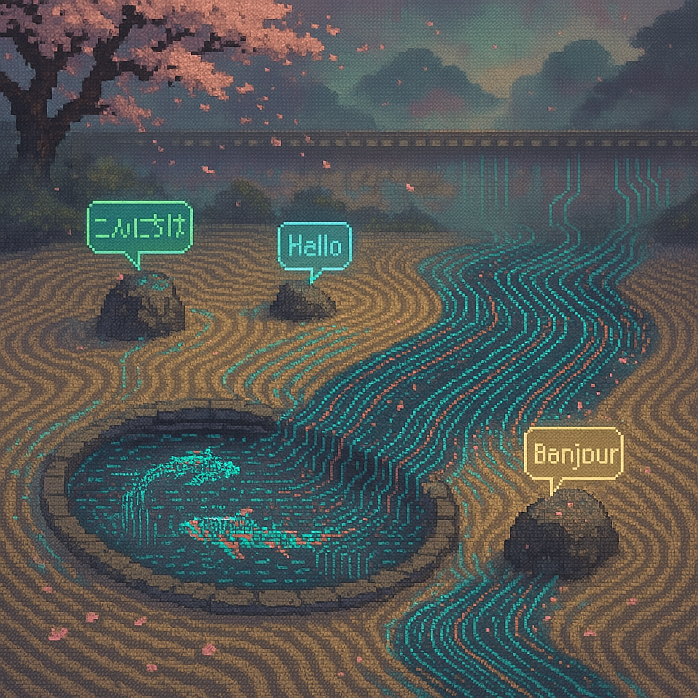
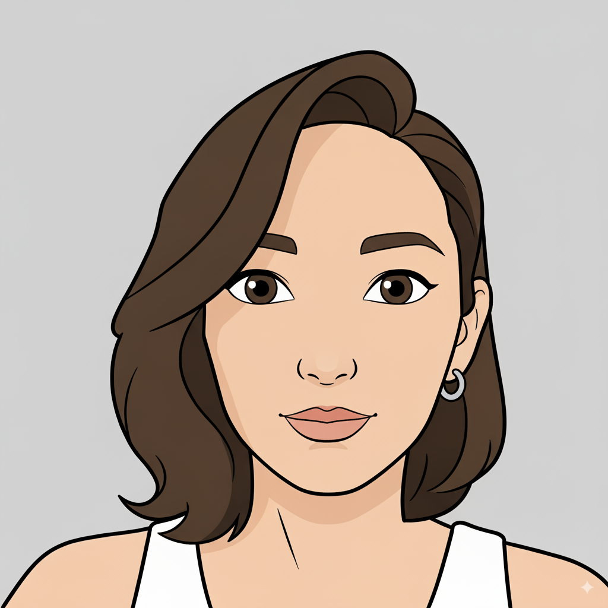
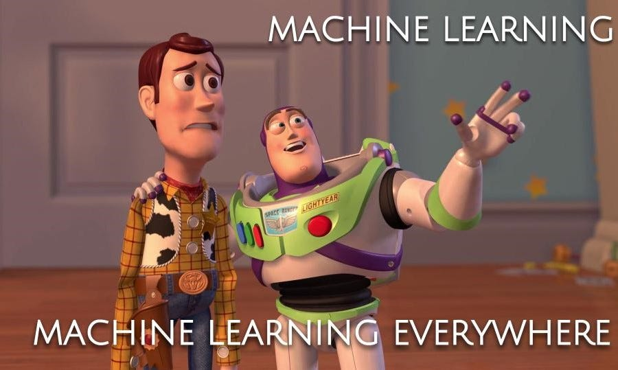
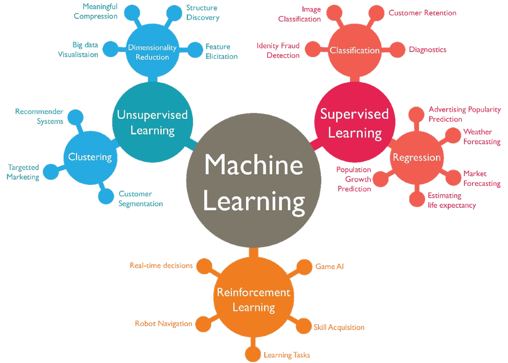
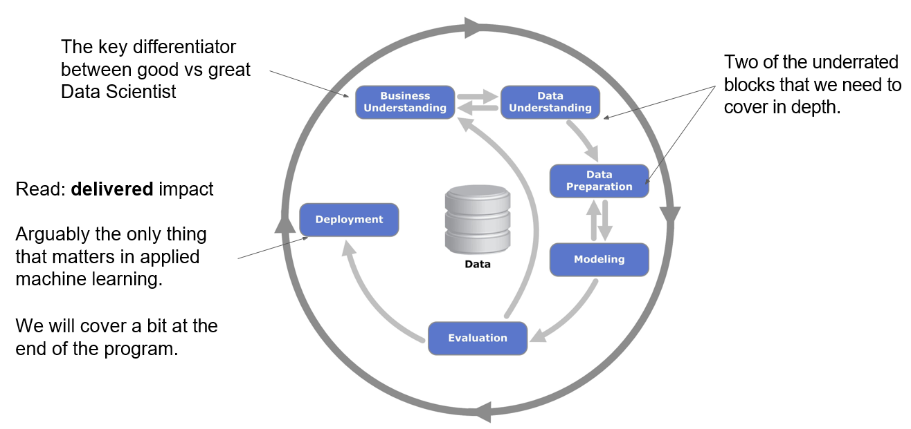
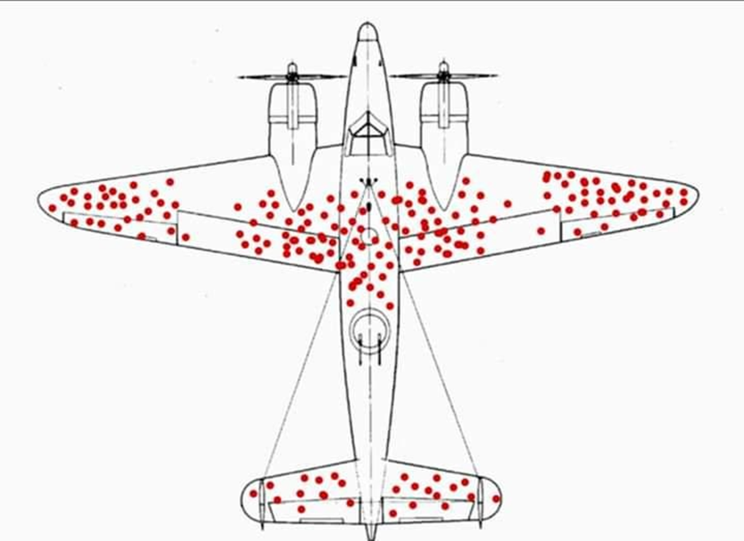
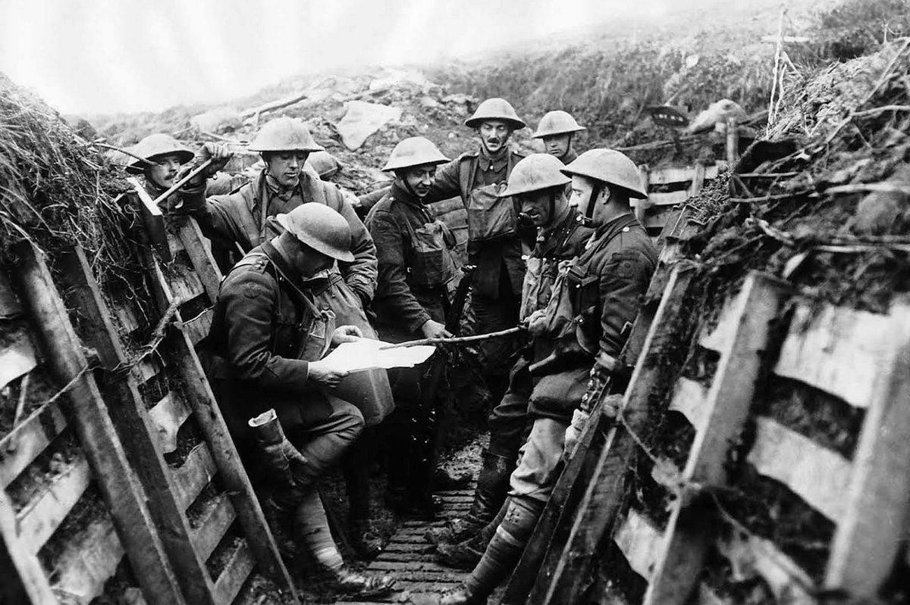
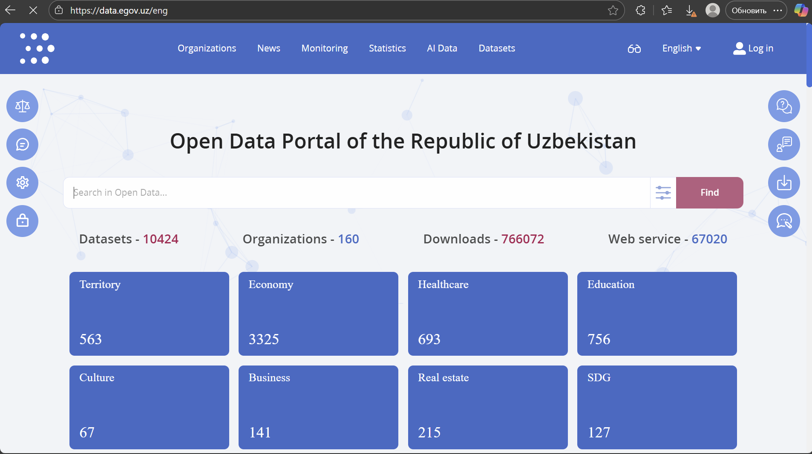
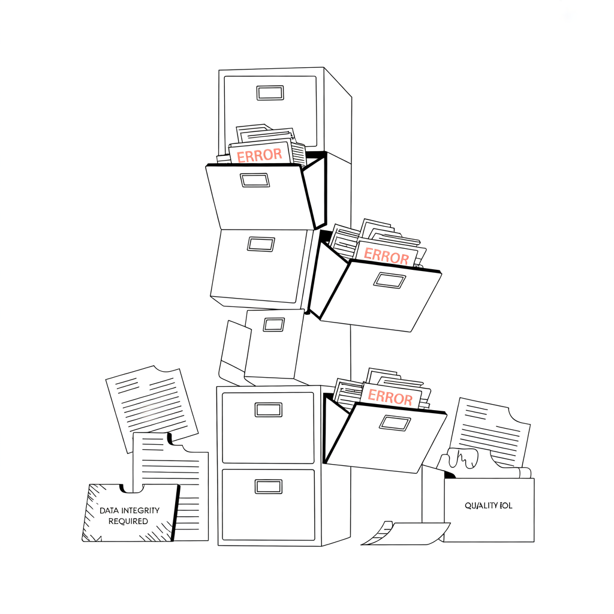

Leksiya 1
Poydevor. Kontekst. Ta'sir.
Dars 01
Algoritmlar va modellarga o'tishdan oldin -
qanday muammolarni hal qilayotganimizni va nega ular muhimligini tushunish.

O'zim haqimda
Olmaotada, Qozog'istonda tug'ilganman. IT sohasida ishlash uchun dasturlashni bilish shart emas - Microsoft, Google va Facebookdagi 80-90% lavozim kod talab qilmaydi.

Raqamlar ortida
Mashinalar o'rganadigan uchta usul

O'qishning ikki yondashuvi
Data-saentist yoki muhandis bo'lishga intilmang - biznes va texnik jamoa o'rtasidagi ko'prik bo'ling.
Diskleymer
Kaggle'dagi g'alabalar emas. Noldan ilg'or AI-tizimlar yaratish emas. Real biznes vazifalari.
ML dunyosi keng. Biz real biznes vazifalarda amaliy qo'llanishga e'tibor qaratamiz.
Vaziyat
Siz butun dunyo bo'ylab masofadan ishga olasiz.
O'tmishda nima qilganingizni ko'rsatmang. Ular uchun nima qila olishingizni ko'rsating. Eng yaxshisi - to'g'ridan-to'g'ri ishga oluvchi menejerga tavsiya orqali.
Auditoriya uchun savol
Bir daqiqa o'ylab ko'ring →
Javob
Kod emas. Algoritmlar emas. Serverlar emas.
Har qanday qayd etilgan ma'lumot: tranzaksiyalar, kliklar, sensorlar, matnlar, tasvirlar, ovoz.
Ma'lumotlar - ML uchun yoqilg'i. Ularsiz model o'rganmaydi, mahsulot foydalanuvchini tushunmaydi.
Garbage in - garbage out. Ma'lumotlar sifati ustiga qurilgan hamma narsaning sifatini belgilaydi.
Amalda
Ko'pincha bu robotlar bilan laboratoriyalar emas, balki kompaniyalar ichidagi tinch tizimlar.
Freymvork
CRoss-Industry Standard Process for Data Mining

Yaxshi data-saentistni ajoyib data-saentistdan ajratib turadigan narsa.
Amaliy ML da haqiqatan ham yagona muhim narsa - yetkazilgan natija.
Qadam 1
Uch ketma-ket qadam
Ma'lumotlarni yig'ish - yoki ular qanday yig'ilganini tushunish
Tahlildan oldin sifat muammolarini aniqlash
Quyi guruhlarni topish va gipotezalar shakllantirish

Omon qolganlar effekti · WWII
Uyga qaytgan samolyotlarning qanotlari va fyuzelyajida o'q teshiklari bor edi.
Javobni ko'rishdan oldin bir daqiqa o'ylab ko'ring →
Omon qolganlar effekti · WWII
Birinchi ko'rinadigan javob
Teshiklar bor joylarni mustahkamlash - tegishlar bo'lgan joylarda.
Omon qolganlar effekti · WWII
Birinchi ko'rinadigan javob
Teshiklar bor joylarni mustahkamlash.
To'g'ri javob
Teshiklar yo'q joylarni mustahkamlash kerak - dvigatel va kabinani. U joylarga tekkan samolyotlar shunchaki qaytmagan.
Omon qolganlar effekti · WWI

Britaniyalik askarlar yumshoq furajkalar kiyishgan. Qayd etilgan bosh jarohatlari - kam.
Po'lat kaskalarga o'tishdi - qayd etilgan bosh jarohatlari soni oshdi.
Paradoksmi? Xulosani ko'rishdan oldin o'ylab ko'ring →
Omon qolganlar effekti · WWI
Britaniyalik askarlar yumshoq furajkalar kiyishgan. Qayd etilgan bosh jarohatlari - kam.
Po'lat kaskalarga o'tishdi - qayd etilgan bosh jarohatlari soni oshdi.
Kaskalar ishlaydi. Askarlar oldin halokatli bo'lgan jarohatlardan keyin omon qola boshlashdi - shuning uchun ularni qayd qila boshlashdi. Kontekstsiz ma'lumot adashtiradi.
Nima ajratadi
Ma'lumotlar qayerdan kelgan, kim va qanday yig'gan, ularda nima e'tibordan chetda qolishi mumkin edi.
Kim namunaga tushdi, kim tushmadi. Biz nimani ko'ramiz - va nimani ko'rmaymiz.
Natijani modellar bilan ishlamaydigan odamga ma'noni yo'qotmasdan tushuntirish.
Statistikani takrorlash
Bizning datasetimiz. Unda biz modelni o'qitamiz.
Population · Bosh to'plamReal dunyo, unda model ishlashi kerak.
Bizning namunamiz haqiqatan ham reprezentativmi?
Ma'lumotlarni yig'ish
Ochiq ma'lumotlar portallari - ML uchun to'laqonli manba

data.egov.uz - 10 424 dataset: Hudud, Iqtisodiyot, Sog'liqni saqlash, Ta'lim, Madaniyat, Biznes, Ko'chmas mulk, BRM.
Ma'lumotlarni yig'ish
Application Programming Interface
CSV va SQL dan tashqari - API bilan to'g'ridan-to'g'ri ishlashni o'rganing
Ma'lumotlar keladigan formatni tushuning
JSON bilan ishlash asoslangan ma'lumotlar tuzilmasi

Ma'lumotlar sifati · 1-qism
Ixtiyoriy maydonlar, sxema o'zgarishi, buzilgan sensor. Ba'zan null ma'no oladi - "cheksizlik", "bilmayman".
Satrli "unknown", "None", "null", nollar va kontekstsiz oldindan belgilangan konstantalar.
Ma'lumotlar sifati · 2-qism
Yo'l qo'yiladigan diapazondan tashqaridagi qiymatlar - masalan, bank ma'lumotlarida yosh < 18.
Sanalar turli yozuvda, valyutalar, temperatura C / F / K da.
Bu ma'lumot bagimi - yoki xususiyatmi? EDA ning asosiy savollaridan biri.
Satr uchun ustunlarning qaysi kombinatsiyasi noyob bo'lishi kerak?
BI da har doim yo'l qo'yiladigan qiymatlar, not-null va noyoblik tekshiruvlarini qo'shing.
Real ish
Aksariyat qismi - bu modellashtirish emas. Bu kurslarda ko'pincha o'tkazib yuboriladigan narsa.
Model - oson qismi. Savolni tushunish - asosiy ish.
Ma'lumot tahlili
Asimmetriya · tavsifiy statistika · taqsimotlar
ML maqsadi - modellar qurish emas.
Balki qarorlarni yaxshiroq qabul qilishga yordam berish - tezroq va kamroq taxminlar bilan.